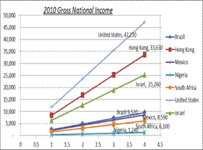

THE IMPORTANCE OF DIVERSIFYING YOUR ECONOMY RICH IN NATURAL RESOURCES BUT STILL CONSIDERED A DEVELOPING COUNTRY
Abstract
The size of a country and its gross domestic product (GDP) are key indicators that determine the overall economic strength of a country and/or state. South Africa and Nigeria are rich in natural resources but with high energy subsidies and a fragmented tax systems has a larger GDP but overall benefits in social and financial outlook is little better than Mexico which has a smaller population and lower GDP than the two countries. This suggests that just like your investment portfolio a diversified economy is key to success for both developed and developing countries. We take a look at key indicators that affect overall financial health and economic stability.
Author:
Taneisa Grier
Department of Humanities & Natural Sciences
University of Phoenix
United States 2013
Paper Transcript of Paper Titled :
THE IMPORTANCE OF DIVERSIFYING YOUR ECONOMY RICH IN NATURAL RESOURCES BUT STILL CONSIDERED A DEVELOPING COUNTRY
The Importance Of Diversifying Your Economy Rich In Natural Resources But Still Considered A Developing Country
Taneisa Grier
Department of Humanities & Natural Sciences
University of Phoenix
United States 2013
Abstract—The size of a country and its gross domestic product (GDP) are key indicators that determine the overall economic strength of a country and/or state. South Africa and Nigeria are rich in natural resources but with high energy subsidies and a fragmented tax systems has a larger GDP but overall benefits in social and financial outlook is little better than Mexico which has a smaller population and lower GDP than the two countries. This suggests that just like your investment portfolio a diversified economy is key to success for both developed and developing countries. We take a look at key indicators that affect overall financial health and economic stability.
Keywords-divesifying, economy, natural reslurces, developing country
Introduction
According to Merriam Webster, the systematic study of the development, structure, interaction, and collective behavior of organized groups of human beings is the science of society or is commonly known as sociology. What importance to a diverse economy does this science have? The economy is the monetary structure of society or said another way, the mobility, health, and function of people within a society is determined by the financial structure of a group of people living within a given radius and proximity to one another.
One can agree that there is more than one perspective from which to look at the economy of a nation, state, country etc. However, I think we all can agree that these perspectives are developed by looking at the dimensions of any said community both macroscopically and microscopically within its financial structure. The layers of such are three-dimensional and help to extrapolate or expose the cellular bases for a thriving economy within smaller units.
Five Components of Society
For the sake of this article we are looking at society being comprised of 5 areas which are undergirded by financial structure/economy within each community. Government, Religion, Business/Economics, Education and Family are determining factors for societal and community health and growth. While the components of society are not limited to these areas they are commonly acknowledge among most.
When considering economy it is important to understand countries that are considered developed, developing and those which are under-developed. In many cases they lack the framework for a consistent revenue structure with which to balance out export and imports, material and non-material production to balance economy and national deficit.
Diversified Economy and Sustainability
Sustainability can provide additional markets to increase or sustain revenue during a volatile, sluggish or developing economy. It has been seen in many international markets that environmental conditions decreases as gross product increases. This makes since because you are using your natural resources to mobilize the economy. Decimated and loss of habitat in the continuum can be counteractive if left unattended. However, if you pair sustainability with other growing markets it will open up green industries for long-term investments that can aid in mobilizing the economy. China’s economic reform increased growth but its environment declined. Their government recognized environmental protection and sustainable economic growth could promote co-developing of the economy as a national principle. (Naizhuo, Currit, & Samson, 2011). That is what we’re seeing with Brazil’s Chevron and their petro market.
Many are quite aware that you need to diversify your portfolio but are we vigilant in translating that to our national economies at large for which you live in. You have to have moderate and no risks investments to help sustain and support revenue growth juxtaposed to high risk investments. Many call it fiscal responsibility to managing the economic state of a nation. This was key to China’s reform in how they managed their material productions of agriculture, manufacturing, electricity and nonmaterial markets of banking and insurance. It opened up markets for education and research etc… (XU, 2004)
It is important to note that an established institution of people in developing countries much less underdeveloped countries should never have over 33% investment of revenue in one market by a monopoly to sustain an economy in one area. Some may even think that percentage is lower. Economist may bring this figure to task. Which is okay and I even encourage us to look at what a sound percentage for which to diversify our economies.
Here are three examples that support the importance for both developed and developing countries to vigorously research how resources and investments are used to support a country.
Environmental Sustainability
If habitat destruction occurs without major action a series of domino effects of symptoms have been observed. If you’re lucky you can catch it before you are thrown into a tailspin. The contrary is neither cost effective nor an economic burden. Lake Victoria in South Africa was the world’s second largest fresh water lake, home to 400 species of small colorful fish known as cichlids. They provided wonderful nutrients to the lakes that included protein to the diets of 30 million humans living near the lake (Berg, Hager 2007). However, in the early 1990s a foreign species, invaded Lake Victoria and wreaked Havoc on its ecosystem. The 30 Million people using the lake as a food source lost their food supply. The environmental devastation still continues to be a concern even in the 21st century. Communities must pose their own environmental questions. Are we susceptible to these same crises? Perhaps it isn’t fish that supplies both the economy and environment with what it needs, maybe it’s another source.
Abuja, the capital of Nigeria is still getting lessons on economic growth despite being the world’s 8th largest oil producer. With a fuel subsidy that offers gas at a reduced rate inside the country, Nigeria’s economy is still yet lethargic (Lovett, K., Eneh, C., Streams, M. 2012). One might wager a guess that Nigeria’s status as a large oil producer cannot be leveraged because 66% of all revenue come from petroleum exports in contrast to 90% of oil used inside the country are imported. Poor revenue structure would have them continually overcoming a fiscal cliff more often than any nation might desire but could be abated with a diversified economy. The countries lack of management and public transparencies due to credible leadership in the area of finance and government are certainly concerns but not the focal point of this article. Their economy is an example of why a municipal should not have more than 33% of its stream of income coming or used as a needed resource coming by one industry as in the case of Lake Victoria.
Implications
Uses of subsidies are intended to lower the tax base or reduce prices of natural resource products. If this is not balanced well and sell at below market costs without recapturing these social benefits in the community at large for extended periods of time, especially in the energy market, you weaken your tax base, and likely increase propensity toward inflation. In a country such as Nigeria if you don’t diverse the economy you limit overall benefit of the subsidy and major market becomes volatile because fiscal management hasn’t been achieved. (Koplow, 2008)

Fig. 1 Gross National Income 2010. ("The World Bank", 2013)
The issue can be seen in developed countries as well. Take the automotive and manufacturing industry. When General Motors (GM) decided to outsource or close plants many communities throughout the Midwest and even South were hit by closing facilities. Notable impacts can be seen in Michigan. General Motors employed almost 30% of workers in many cities in Genesee County. The result caused a strike in the early 1990s and a domino effect of loss of jobs which drastically decreased the population size to what it is now. There may be other factors that lead to economic change but the size of the employer and percentage of the number of people it employed was definitely a catalyst.
These three examples beg the question of what’s a strong economy. An economy that is strengthened is typically diverse in the industries which make up the workforce and they are one of the last to enter a recession and have an early exit as well. In the case of a country or state that is rich in natural resources to which you can attach the term non-renewable. You have to develop a revenue partner that accounts for the variability and volatility of not replenishing enough to meet an ongoing demand. This partner is sustainability and innovative research.
Take the fields of India in which there has been catastrophic deforestation of trees to produce sandalwood. Sustainability becomes a requirement as well as the ability to replicate or synthesize a similar product. The demand of the resource provides insight into how viable sustainability and innovation would be.
“The world economy is pregnant with multiple equilibria-self-fulfilling outcomes of pessimism or optimism with major macroeconomics implications. (“The World Economy,” 2012). If this is true- than a look at Israel’s low inflation and tight fiscal management is warranted. There is a positive link between their governmental management and use of the countries natural resources. Additionally, China’s diverse markets and robust economy is a tell-all to optimism in consumer rich communities that are ripe for testing national markets. What is interesting about China and Israel is that they have similar population and GDP that rival much larger countries. They represent the diverse economy needed to sustain recession and volatile economies.
Country |
GDP in $US Currency(2011) |
Brazil |
2.5 trillion |
Hong Kong |
248 billion |
Israel |
258 billion |
Mexico |
1.2 trillion |
Nigeria |
243 billion |
South Africa |
401 billion |
United States |
14 trillion |
Fig. 2 based on World Bank Data figures ("The World Bank", 2013).
Country |
Gross Domestic Product (GDP) $US Currency(2011) |
Gross National Income (GNI) |
Gross National Income (GNI) |
Brazil |
2.5 trillion |
10,700 |
11,630 |
Hong Kong |
248 billion |
35,710 |
36,560 |
Israel |
258 billion |
28,380 |
- |
Mexico |
1.2 trillion |
8,870 |
9,600 |
Nigeria |
243 billion |
1,200 |
|
South Africa |
401 billion |
6.950 |
7,610 |
United States |
14 trillion |
48,550 |
50,120 |
Fig.3 (GDP with respect to GNI) ("The World Bank", 2013).
References
Koplow, D. (2008, September). Subsidies and market intervention. Encyclopedia of Earth.
The World Economy. (2012, October). National Institute Economic Review, 222.
XU, Xianchun. (2004). China's gross domestic product estimation. China Economic Review, 15(), 302-322.
Naizhuo, Z., Currit, N., & Samson, E. (2011). Net primary and gross domestic product in China derived from satellite imagery.Ecological Economics, 70(), 921-928.
Streams, M., Lovett, K., & Eneh, C. (2012, February). Reliance on natural resources for public finance brings risk, even if irresistible.”. Society for Public Administration.
Berg, L., & Hager, M. C. (2007). Visualizing Environmental Science (4th ed.). Hoboken, New Jersey: Wiley & Sons.
Figures 1,2,3 The World Bank. (2013). Retrieved from http://www.worldbank.org
- AUTHORS PROFILE
- Taneisa Grier is a chemist by training, an educator by choice and a photographer by happenstance. She is an instructor in Post-Secondary Education. Having taught in the major 3 models of education (University, Community College, & Online) along with her experiences in finance it has afforded her insights and perspectives for local and global communities. When she isn’t reading or crunching numbers she’s working on research and development for her company.